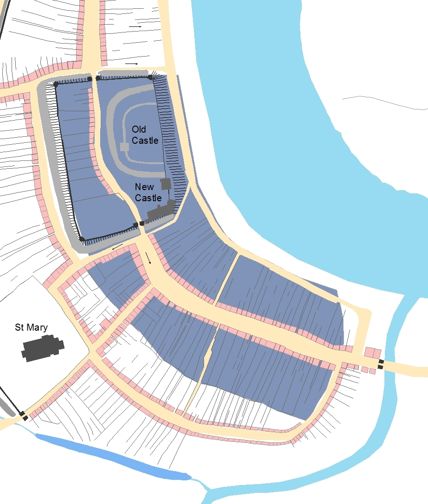
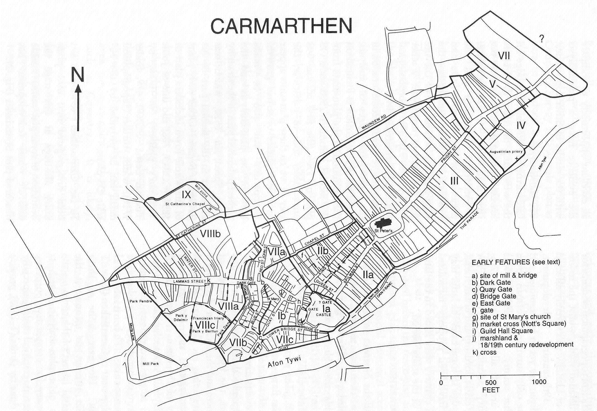
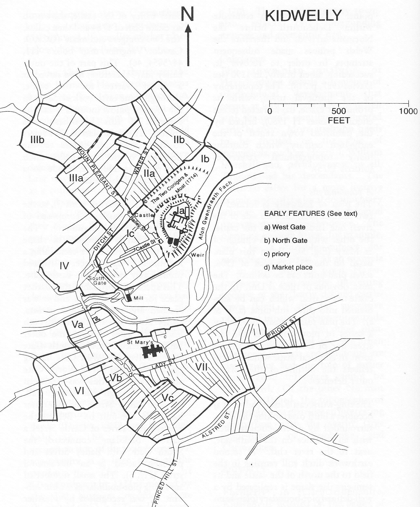
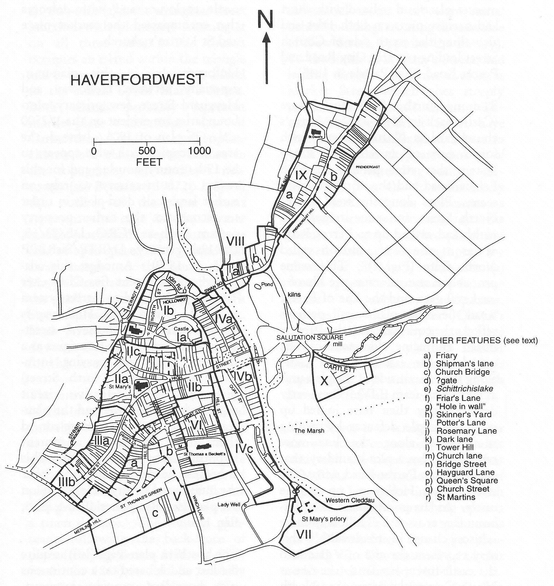
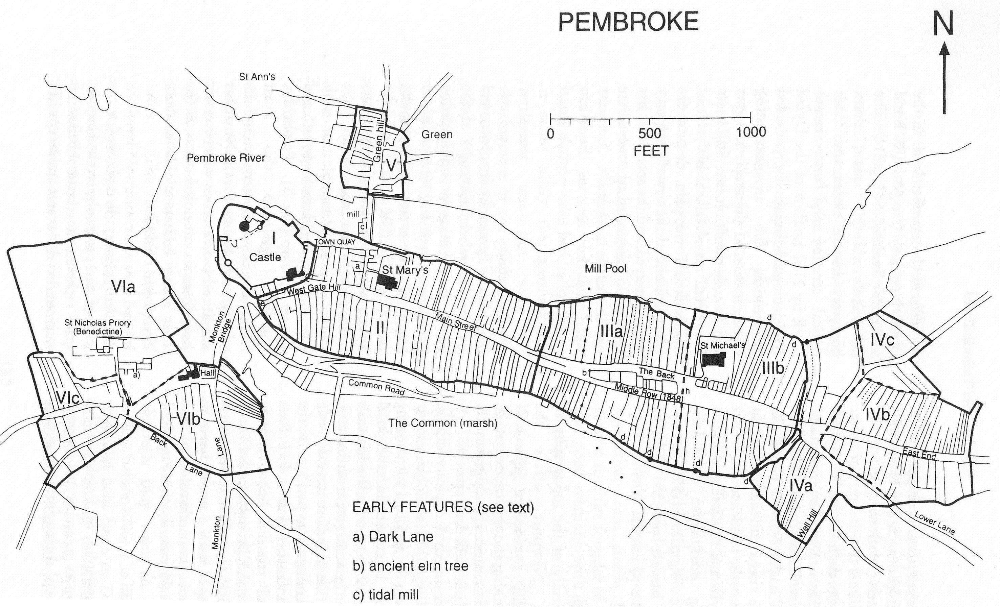

Norman castle-towns
Keith Lilley and Gareth Dean
Swansea is one of many towns in Wales that shows the influence of the Norman Conquest. Here we consider Norman Swansea in this wider comparative context.
From the late-eleventh century onwards, lands in Wales were given by the new Norman kings of England to their kinsmen and followers. These aristocrats and nobles sometimes acquired large tracts of land, effectively forming a border or ‘frontier’ between Welsh Wales and Norman Wales. This frontier zone is known as ‘the Marches’ and it comprised counties in south Wales, along the coast from the river Wye to the headlands of Pembrokeshire, as well as counties situated along the modern border between England and Wales, on a north-south axis from the Dee estuary to the Severn. In the late-eleventh and twelfth centuries, these largely rural Marcher lordships were ripe for urban development.
Towns promoted further outsiders to come to colonise and settle parts of Wales, so helping to maintain Norman authority. An important part of this colonisation process was the creation of new towns, often accompanied by a castle which formed the seat of power for the Norman aristocrats who acquired these lands. Castle and town, placed together, sitting side by side in the landscape, came to be a hallmark of the Norman conquest of Wales. In countless locations across the country, but especially in those areas at the frontiers between Norman and Welsh lordships, castle-towns were established. Swansea fits into this broad pattern, but how does the Norman castle-town which was set out at Swansea compare with others in Wales that were being formed at around the same time? There is scope to explore this by using the results of the City Witness mapping work.
The Norman town at Swansea
The detailed study of towns in Norman Wales is well-established and provides a basis for examining their characteristics, to look for common patterns and distinguish variations between them. First, some consideration of Swansea as a Norman castle-town is required.
Leaving aside the matter of whether there was a pre-Norman town at Swansea (see Viking Swansea), it is clear enough that a Norman motte-and-bailey castle was established on prominent and elevated site overlooking the Tawe. The Old Castle, as it later became known, was new in around 1100, when constructed under Henry de Beaumont, the first earl of Warwick and lord of Gower. The castle itself was located beside the river, a common trait at the time of castles placed by the Normans in towns. It is seen, for example, in cases such as Nottingham, Winchester and Chester, to name but three. At Swansea, the large square-shaped bailey embraced the castle mound, the ‘motte’, the area coloured dark blue on the map here. Opposing gateways were placed on the north and south sides of the castle enclosure, effectively controlling traffic through the Norman town, between the ferry to the south and the inland routes to the north and west. This strategic placing of the castle shows the Norman lord’s desire to establish control in the local area, and demonstrate their authority in a visible and dominant way to all locals and newcomers alike. But what of the town?

The Norman castle in Swansea was placed at the northern end of Wind Street, looking down upon and along the town’s main street. Wind Street functioned as the town’s main market place in the late-eleventh century, and this close juxtaposition of castle and market place was deliberate (the area coloured dark blue on the map). The broadening of Wind Street, towards its northern end, accommodated the market stalls in the street. The market’s location at this particular end of the street emphasises the importance of this close relationship between the castle and the market, reflecting the desire of the Norman lord, and his retinue, to be in a place that allowed direct view onto – and surveillance of – the activities taking place in the street below, including not just trading activities but other social gatherings that could threaten the lord’s authority.
Along the length of Wind Street lay the dwellings and properties of the Norman town’s inhabitants. Who resided in these houses and properties fronting the street at this time is not possible to say, for there are no contemporary accounts recording their names or occupations. However, recent archaeological excavations of properties in and around Wind Street reveal a range of trade and servicing activities, most likely involving craftspeople, artisans, merchants and others. For example, the earliest medieval coin to be found in Swansea, dating to the reign of Henry I (1100-35), comes from Wind Street, and from behind the built-up street frontage, in the gardens and plots to the rear, evidence was also found for iron working. Also, behind those plots fronting the west side of Wind Street, it appears that there was a defensive feature, a bank and ditch with palisade rather than a wall. One part of this ditch alignment is known from excavation (at its southern end), and from this the likely course of the ditch can be interpolated using the surviving patterns of plot boundaries (evident on from historic maps), particularly a long and prominent boundary running parallel to Wind Street, from south to north, to join with the castle’s defensive ditch.
The built up area of Wind Street thus had a defensive circuit, separate from the castle’s defences, but linked with them. No equivalent defensive feature appears to have existed behind the plots fronting the east side of Wind Street, most likely because the river in effect formed a defensive feature. Overall, then, the area of Wind Street, in around 1100, formed a defensible town, connected with the castle but at the same time separate from it. Together they formed a ‘castle-town’, a combination that favoured both the townspeople and the lord, providing a defensive stronghold as well as a trading place.
What is missing from the castle-town at Swansea at this time is a church or a chapel. St Mary’s had arguably not yet been constructed, and the research carried out for the City Witness project suggests it belongs to a slightly later period of Swansea’s urban development (see Development of Medieval Swansea). In fact, the likelihood is that Swansea’s Norman inhabitants worshipped at St John’s, a chapel first recorded in association with the Knights of St John in the twelfth century. Such an arrangement is typical for ‘new towns of the Middle Ages’, as Maurice Beresford noted, where pre-existing ecclesiastical provision often remained unaltered in the early years following a town’s creation. Only later, as a town gained in population, did a new chapel or church get built to serve the local townsfolk, which appears to be the situation at Swansea. Norman Swansea, then, as a castle-town without a church, seems to share characteristics seen elsewhere. Other similarities and differences are also worthy of study, to explore how far Swansea compares with castle-towns established elsewhere in Wales under the Normans in the late-eleventh and early-twelfth centuries. A basis for this comparison exists thanks to existing detailed studies of Norman towns and their urban forms, not just for this part of south Wales but in others too.
Norman castle-towns and Marcher lordships
The process by which the new Norman lords acquired their lands in Wales has long been studied by historians. Conquest came first, as military campaigns led by William the Conqueror’s army and senior kinsmen, such as William fitzOsbern and Roger of Montgomery, brought large tracts of Wales under Norman territorial control. New motte and bailey castles were built by the Normans across the Marcher lands, along the borders of England and Wales. The extent of this phase of military conquest and subjugation can be seen, geographically, from mapping the distribution of motte and bailey castles. After conquest came colonisation, as the estates and lands brought under Norman control were sub-divided and sub-infeudated to lesser lords, not always themselves from families of Norman ancestry or descent. The consequence of this, by 1100, was a patchwork of lordships which shared in their common allegiance to the Norman kings of England, rather than Welsh aristocracies.
The towns established on Marcher lordships often accompanied the castle-building process. The exact timing of this is sometimes difficult to disentangle. While in some cases the castle was built first and then the town second, in others the castle and town were contemporary foundations, conceived as one single entity and formed together. There were of course many Norman castles in the Marcher landscape which did not have towns appended to them, but relatively few new towns were established in this period without having a castle adjoining them. Later, in the twelfth century there are such examples, such as Newport in Pembrokeshire, but around 1100 the castle-town complex was the norm for new urban foundations. Of course, these Norman new towns were not inserted onto a blank canvas. There were many existing market settlements in Wales prior to the arrival of the Normans and the new colonisers and settlers. Places such as Llandeilo and St David’s for example, are towns with ecclesiastical origins, pre-dating the Norman Conquest, while Tenby and Swansea have place-names that are suggestive of Norse or Viking occupation (see Viking Swansea).
As far as new Norman castle-towns are concerned, those created in Glamorgan, Gwent and Dyfed in and around 1100, offer a useful comparative basis, partly for geographical reasons, because Swansea formed part of an urban network in this region, but also historical reasons too, for the Norman lords of Gower were part of the new social and political order in south-west Wales. One approach to take with this comparison is to look at features that characterise the landscapes of the new castle-towns, such as their street patterns, the locations of their castles and market places, their urban defences, provision of churches, and their locales and topographical sites (using a method of plan-analysis, as described under ‘Mapping Medieval Swansea’). This requires a degree of selectivity, and so here the castle-towns compared here with Swansea are those that were established early on after the Norman Conquest of south Wales. The chosen towns share certain traits. First, the towns of Carmarthen, Kidwelly, Pembroke and Haverfordwest, all lay close to the coast, like Swansea, and positioned on major crossing points of rivers and estuaries. Second, apart from Kidwelly, each of these castle-towns also developed (like Swansea) into reasonably significant urban places following the Conquest, partly as a result of having an early date of foundation, as towns, but also because of their continued role as local administrative centres after foundation.
Carmarthen is located some 20 miles (30 km) north-west of Swansea, and similarly occupies a strategic location, an elevated position above the River Towy (Afon Tywi). Unlike Swansea, however, Carmarthen has first and second-century Roman origins (its name was Moridunum). The Roman defensive circuit existed physically by the time of the arrival of the Normans in the late-eleventh century, and the new town was fitted around it. The Norman influence is evidenced by the creation of a castle-town, located outside the Roman defences on the western flank, overlooking the Tywi. The castle was established by William fitzBaldwin in 1094, on the king’s instruction. The map here shows the castle at Carmarthen situated immediately above and overlooking the bridge across the river. The castle gate faces north-west onto the town’s market place, which is a broad street aligned with the entrance to the castle. Here there is a clear similarity with the layout seen at Swansea. From the market place at Carmarthen, Quay Street runs down to the waterfront.
The castle-town at Carmarthen forms a distinct area in the town’s plan, as at Swansea. On the map, the castle-town area is numbered (I). Immediately adjoining it, to the east, is another area that has resemblance with Swansea. Between the castle-town (I) and the area of Roman Carmarthen (numbered III on the map), is a pair of streets, running almost in parallel, connecting the castle-town with the church of St Peter, which sits just inside the former Roman defences and may represent the site of an earlier church of St Teulyddog. The pattern here is reminiscent of that at Swansea, where High Street and Back Lane connect the castle-town with the early church of St John’s. At Carmarthen the parallel streets and the area around them (numbered II on the map) may represent an early expansion of the castle-town, infilling a piece of ground between the castle and church, perhaps after the town was burned by the Welsh, in 1116. As with Swansea, identifying the precise chronology of these phases of development is difficult, but the relative chronology, and the phasing, seems to be similar at both places.

There are similarities, then, in the layouts of both early Norman Swansea and Carmarthen, and their development sequences also look similar. The early intervention of their Norman lords at each place, in the 1090s-1100s, perhaps explains this, a common approach taken by both fitzBaldwin and de Beaumont. Kidwelly is a further example of this initial phase of castle and town building activity of the 1090s.
Kidwelly lies south of Carmarthen and to the west of Swansea, and like them is also situated on the banks of a tidal river at a crucial crossing point. The castle town at Kidwelly is positioned on the western side of the Gwendraeth Fach river, with the castle directly overlooking the river, analogous to the castle sites at Swansea and Carmarthen. The east bank of the river also saw urban development at Kidwelly, around the church of St Mary. The overall built-up area of medieval Kidwelly is shown by the map here. The layout of the castle town (numbered I on the map), consists of a defended area that contains the castle, constructed by William de Londres in 1093, and an adjacent part consisting of a triangle of streets, including Castle Street which leads from the castle gates. It is possible that the streets and plots within the outer bailey of the castle were developed after the castle was established, as Swansea. If so, then the urban area of the castle-town at Kidwelly in the late-eleventh century lay outside the outer bailey defences, to the west, along Mount Pleasant Street and Water Street (numbered II and III on the map). There were two gates, West Gate and South Gate, giving access into and out of the outer bailey defences.

Kidwelly was attacked and burned by the Welsh soon after its foundation, and more permanent control of the area came in the reign on Henry I, when Roger, Bishop of Salisbury became lord of Kidwelly (in c.1106). Interestingly, Roger also had established a castle-town at Devizes in Wiltshire, and it too has a semi-circular plan, like that at Kidwelly. The similarity between the layouts of Devizes and Kidwelly raises the possibility that the latter was laid out to his plan, and that the burning of the castle in the 1090s had necessitated a wholly new construction of castle and town. It is probably in the early-twelfth century too that the area of the town, around St Mary’s church, was established, on the east side of the river, when Roger established a Benedictine priory there in c.1114. The priory seems to have developed its own market place (in Lady Street) and in effect Kidwelly functioned as a twin town, the castle town on one side of the river and the priory’s town on the other. The early-twelfth century development of Kidwelly, around St Mary’s, parallels the situation at Swansea, too, with the creation of the area of Fisher Street, Frog Street and Cross Street around a church also dedicated to St Mary’s, also in the twelfth century.
Moving further west from Kidwelly and Carmarthen, two other Norman castle-towns likewise compare in similar ways with Swansea. Haverford (later named Haverfordwest) and Pembroke are both located on the important estuary of the Cleddau river. Both have early Norman castle-towns placed at crossing points, but in the case of Haverford its early origins are somewhat uncertain. A castle is recorded by the early-twelfth century, c.1110, when Gilbert de Clare supposedly founded it, but by then Henry I was encouraging Flemish settlers in this area and one of these, the first castellan, named Tancard (or Tankred), may have been involved. The castle-town at Haverford is comparatively small and located above the river crossing on the west side of the Cleddau. The local topography is used to dramatic advantage with the castle perched upon a significant hill, and the accompanying new town sitting on the western side of the castle.

The castle-town at Haverford, as at Carmarthen, consists of a small market place with a church (here dedicated to St Martin – a patron saint popular with Norman lords) opposite the castle entrance. The area of the castle-town (numbered I on the map) is relatively small and on a constricted site, and so perhaps not surprisingly the expansion of Haverford later took place to the south of the castle, on less steeply sloping ground and along the riverside. This expansion is shown especially by the areas numbered II, III and IV on the map. The largest of these areas lies closest to the castle-town, and is formed by three streets that form a triangle of streets within which is St Mary’s church. It is possible that the triangular streets bounded a once open area, a large market place subsequently in-filled as in other similar cases such as Alnwick in Northumberland. This part of Haverfordwest may have been developed in the later twelfth century under William Marshall, a nobleman involved in developing new towns in Ireland, in the reign of King John, such as New Ross. If the area around St Mary’s is earlier in date than this, then it may have been a royal initiative. Either way, it is again noticeable that a phase of urban expansion belonging to the twelfth century in Haverfordwest was accompanied by the foundation of a church dedicated to St Mary, as at Swansea and at Kidwelly.
Turning finally to Pembroke, the castle-town occupies a long ridge, with its castle sitting high at the western end overlooking the Pembroke River, part of the larger Cleddau estuary. The dramatic site, with the town surrounded along its flanks by steep ground, was once nearly fully encircled by water. The main approach into the town is from the east, and one single main street leads through to the castle. In its plan, the castle-town has striking similarities to Swansea, with the street aligned onto the castle gate and plots stretching away on either side of the street (the area numbered II on the map). The earliest phase of urban development at Pembroke appears to be the area of the castle-town, and it is recorded – by Gerald of Wales no less – that ‘Arnulf be Montgomery was the first to build a fortification… from wooden stakes and turf’. Arnulf was son of Roger de Montgomery, Earl of Shrewsbury, who was one of the key magnate lords of the Marches and also had led the Norman army into western Dyfed in the 1090s.

The castle-town at Pembroke may reflect either Arnulf’s or Roger’s influence, but as with Haverford, royal influence in the early-twelfth century is also plausible. The de Montgomery family was exiled in 1102, after which the castle was in royal hands, until 1138, during which time Henry I also granted a borough charter. The probability is that St Mary’s church was inserted into the town, on Main Street, at around this time, for its location – offset from the street – suggests an afterthought, rather than a deliberate location made at the time the street and plots were laid out. The prosperity of Pembroke, in part due to its administrative role as a county town and importance as a royal castle, is evident in the extension to the urban area, east of the castle-town, and a second parish church, dedicated to St Michael. With Pembroke, then, like Haverford, the initial castle-town of the immediate Conquest period came to form the nucleus of a larger and successful town during the twelfth century. It is a pattern shared too by both Carmarthen and Swansea.
Contrasts and connections between Norman castle-towns
Having considered Swansea as a castle-town within this wider geographical and historical context of Norman settlement in south-west Wales, what comparisons may be drawn? First, there are similar urban forms evident, the layouts of the castle-towns sharing similar traits in design. Most notable are the common alignments of market streets with castle gates, with the castle invariably located somewhere close to and overlooking a river and crossing point. In most cases too, the castle-towns are situated on the western sides of the rivers, what might be regarded as being on their Welsh side assuming the inhabitants might retreat eastwards towards England, if forced.
The layouts of the castle-towns reflect a common concern to connect defence with trade and settlement, with provision in each case for townsfolk to occupy sometimes very generously sized plots fronting onto the streets. Even so, the area of the castle-towns varies, as do the sizes of the market places, from the relatively small as Carmarthen and Haverfordwest, to the larger, street-length market places seen at Pembroke and at Swansea. This may indicate variations in the expected potential of commercial activities see by those who initially established them, for larger market places certainly might follow, as in the case of Haverford. Later expansion is a characteristic of all the castle-towns, seemingly commonly occurring during the twelfth century, and in three of the selected towns accompanied by the foundation of a new church, dedicated to St Mary.
Between the castle-towns, then, there is a clear model of urban development under the early Norman lords in south-west Wales. Starting with a castle-town, formed by the 1090s-1100s, sometimes encompassed by a circuit of defences but not in every case, within half a century or so after foundation the process of colonisation of this part of Wales had proved successful enough to require further urban expansion. In fact, this model of urban development is found in other ‘frontier’ regions of Norman England, too, not just in the Marcher lordships of Wales but in northern England. What this suggests is a common approach to urbanisation under the Normans, a pattern which Swansea fits. It saw towns created first (with castles) primarily to assist with conquest and securing military imperatives of controlling newly-acquired lands, and then subsequently, shortly, extended to accommodate greater numbers of settlers and inhabitants drawn to live in these frontier towns.
After conquest, then, colonisation under the Norman lords continued to occur through urbanisation. Towns were a fundamental part of the gradual cultural change in south-west Wales, as the land and its people became more and more influenced by those that came from outside, from England, from Flanders and from Normandy. Swansea’s urban development during the late-eleventh and twelfth centuries also supported this gradual cultural change, a legacy that is still with us today.